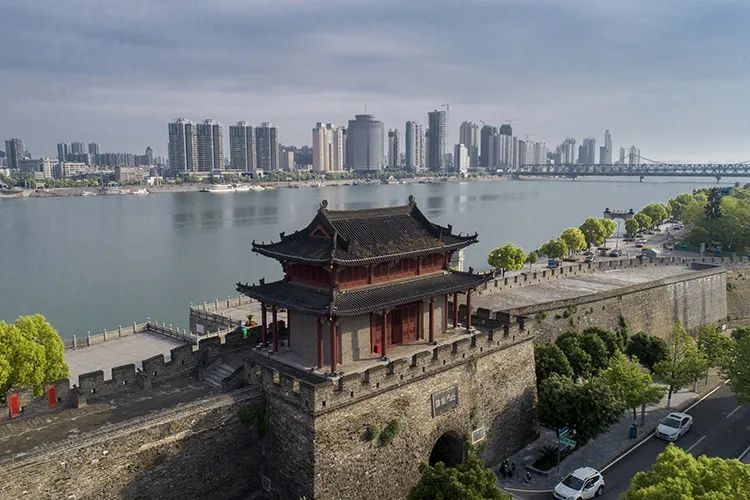
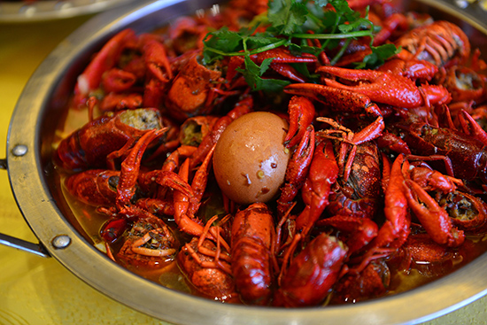

襄阳市，曾用名襄樊，湖北省辖地级市，地处中国华中地区、湖北西北部，汉江中游，东邻随州市，南界荆门市、宜昌市，西连神农架林区、十堰市，北接河南省南阳市。
襄阳市因地处襄水之阳而得名，有2800多年历史历代为经济军事要地，襄阳城是襄阳国家历史文化名城的核心区，被誉为“华夏第一城池” ，襄阳是楚文化、汉文化、三国文化的发源地，素有“华夏第一城池、铁打的襄阳、兵家必争之地”之称。
襄阳护城河位于襄城区，长5060米，最宽处达250米，平均宽度180米，面积91万平方米，为亚洲最宽护城河。得益于此，襄阳城被誉为“华夏第一城池”。
襄阳小北门，是襄阳城六大城门之一，又称临汉门。“汉沔津梁”“北门锁钥”是对它作为战略要津的又一赞誉。
襄阳牛肉面，是襄阳市美食名片、非物质文化遗产，湖北“十大楚菜名点”之一。襄阳牛肉面是襄阳人最喜欢的早餐，它特点是“一辣二麻三鲜”，味道可口，回味悠长，久食不厌。很多襄阳人如果三两天不吃牛肉面，感觉口中无味，食欲大减。吃牛肉面时，再喝一碗襄阳黄酒或是襄北豆奶，惬意而舒服。
宜城大虾个大肉多，鲜嫩爽口，吃起来一麻二辣三香，2005年8月，在襄樊人民广场举行的首届中国·湖北·襄樊美食文化节暨烹饪大赛上，宜城大虾经过专家与群众评比，在众多菜品中脱颖而出，荣获"襄樊名菜"中的首道名菜。